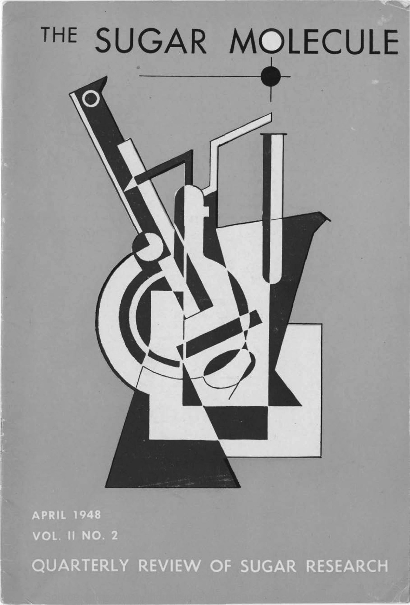
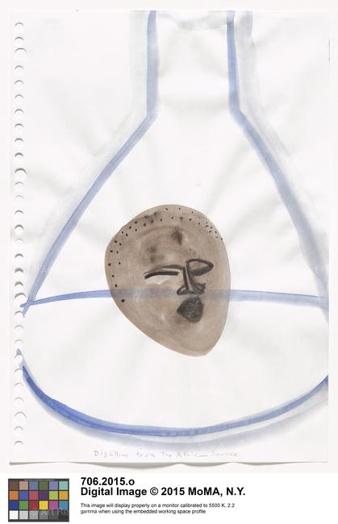
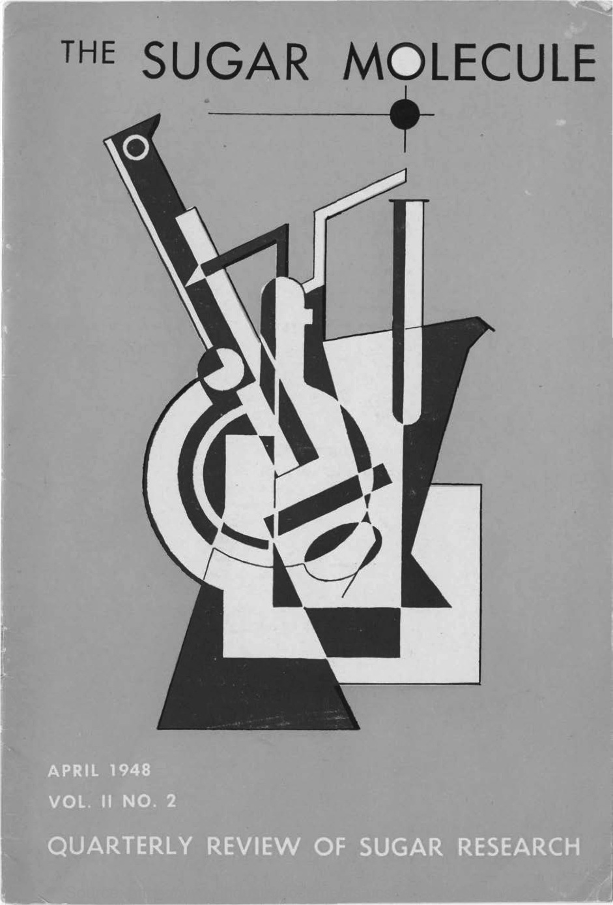
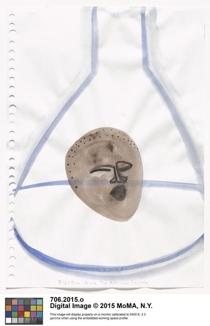

David Singerman | Home
The Sciences of Sugar
The cover of the Sugar Research Foundation's magazine, April 1948, at UCSF Industry Documents Library.
A sheet from Kara Walker, "Sugar Makes This World," 2013-2014, at MoMA.
The cover of the Sugar Research Foundation's magazine, April 1948, at UCSF Industry Documents Library.
A sheet from Kara Walker, "Sugar Makes This World," 2013-2014, at MoMA.
